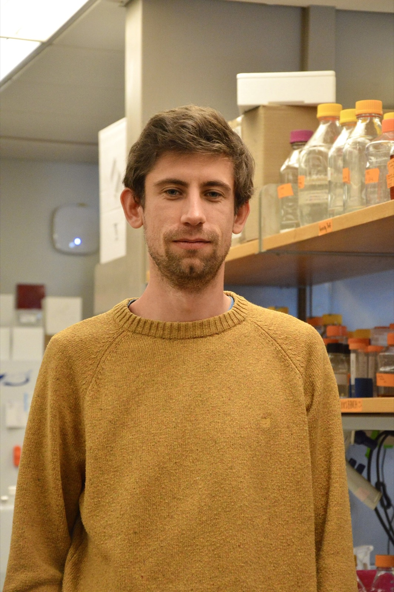

Team Profile
Vincent de Bakker
Postdoctoral Research Fellow | Funded by the Swiss National Science Foundation
Lab dates: Oct 2024 – Present

Team Profile
Postdoctoral Research Fellow | Funded by the Swiss National Science Foundation
Lab dates: Oct 2024 – Present

I work at the intersection of quantitative and fundamental microbiology. In that context, I'm currently implementing CRISPR interference techniques to study cell envelope biogenesis in Corynebacterium glutamicum.